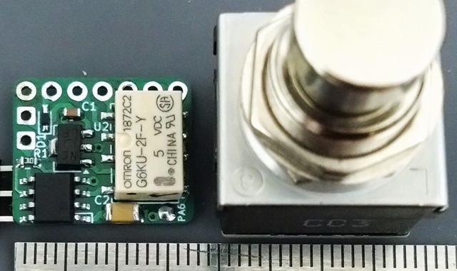
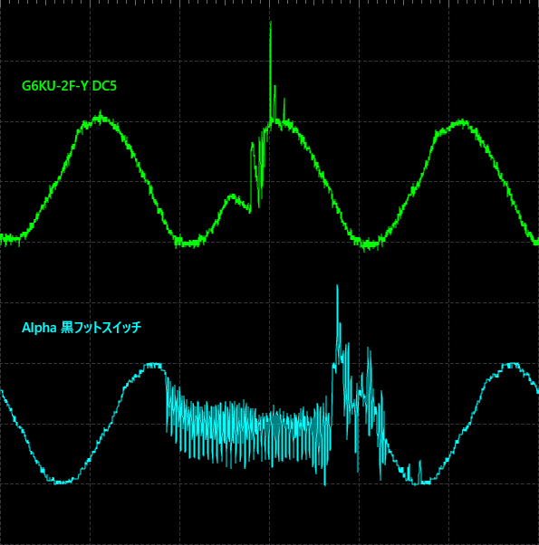
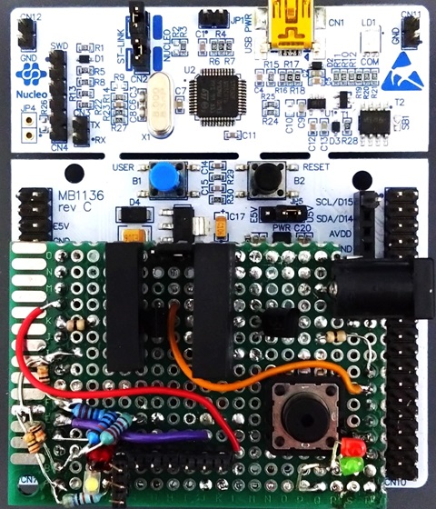
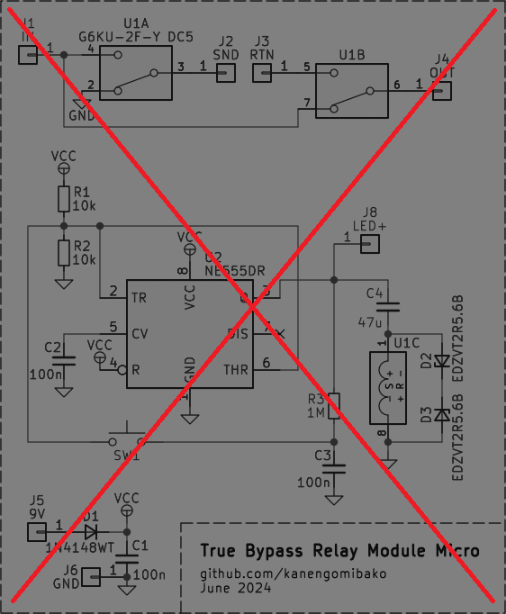

True Bypass Relay Module Micro
2024年07月13日 カテゴリー：自作エフェクター（アナログ）

以前製作したTrue Bypass Relay Moduleの小型・機能強化版です。最初はNE555を使ったものを試作したのですが難点（記事最下部に記載）があったため、マイコンを使用しました。BOOTHにて販売中です。データ・説明書はGitHubにあります。
▽回路図

今後JLCPCBに実装を外注する可能性を考慮し、ラッチリレーはLCSCにあるG6KU-2F-Y DC5を選びました。マイコンは、使い慣れているSTM32ではなくAVRです。5V動作で40mAの電流出力が可能なので、リレーを直接駆動できると考えたためです。
- リレーコイルのサージ電圧
リレーコイルの電流を止めた時には、瞬間的に逆の電圧が発生するため、通常は保護ダイオードが必要です（参考：リレーコイルのサージ保護について）。今回の回路でコイルの電圧を測定すると、瞬間的に最大5.3V、その後1.5msで4.1Vに下がりました。おそらくマイコン出力部のMOSFETや保護ダイオードが働いていると思われます。また、マイコンは出力電流増加に伴い出力電圧が落ちる問題もありますが、リレーの最低駆動電圧3.75Vはクリアしています。
- スイッチングノイズ
1kHz 100mVp-pの正弦波を発生させた状態でスイッチングした時、観測できた最大のノイズを示します。Alpha製の黒いフットスイッチとの比較です。※ノイズはバラつきがあり、常にこのスイッチングノイズが出るというわけではありません。

大きさは同じくらいで、リレーの方が無音の時間が短い傾向があります。聴感上許容範囲のレベルだと感じたので、スイッチング時のミュート機能は実装していません。もしミュート機能を実装するなら、余っているPA6ピンにフォトリレー等を接続するとよいでしょう。
▽Arduinoスケッチ
/*
True Bypass Relay Module Micro
v1.0 20240709
https://github.com/kanengomibako
ヒューズビット設定
BOD Mode when Active/Sleeping: Enabled/Enabled
BOD Voltage Level: 3.7V (Unofficial)
Chip: ATtiny202
Clock: 1 MHz internal
Save EEPROM: EEPROM retained
*/
#include <EEPROM.h>
#define SHORT_PUSH_MSEC 10 // スイッチ短押し時間 ミリ秒
#define RELAY_DRIVE_MSEC 11 // リレーコイル駆動時間 ミリ秒 16まで
const long shortPushCount = 10 * SHORT_PUSH_MSEC; // 10カウントで1ms
bool fxState = true; // エフェクトオンオフ状態 true: オン
long swOnCnt = 0; // スイッチを押している間カウントアップ
long swOffCnt = 0; // スイッチを押していない間カウントアップ
int onStart = 1; // 起動時エフェクトオン設定
int momentaryMode = 0; // モーメンタリモード設定
const int addr0 = 0; // EEPROM 起動時オンオフ設定書き込み先アドレス
const int addr1 = 1; // EEPROM モーメンタリモード設定書き込み先アドレス
// エフェクトオン動作
void fxOn() {
digitalWrite(PIN_PA7, LOW);
digitalWrite(PIN_PA1, HIGH);
delayMicroseconds(1000 * RELAY_DRIVE_MSEC);
digitalWrite(PIN_PA1, LOW);
digitalWrite(PIN_PA3, HIGH); // LED
fxState = true;
}
// エフェクトオフ動作
void fxOff() {
digitalWrite(PIN_PA1, LOW);
digitalWrite(PIN_PA7, HIGH);
delayMicroseconds(1000 * RELAY_DRIVE_MSEC);
digitalWrite(PIN_PA7, LOW);
digitalWrite(PIN_PA3, LOW); // LED
fxState = false;
}
// LED点滅
void blink(int n) {
for (int i = 0; i < n; i++) {
digitalWrite(PIN_PA3, HIGH);
delay(50);
digitalWrite(PIN_PA3, LOW);
delay(150);
}
}
// 電源電圧低下時割り込み
ISR(BOD_VLM_vect) {
PORTA.OUTCLR = PIN3_bm; // 高速 PA3 LOW (LED)
PORTA.OUTSET = PIN7_bm; // 高速 PA7 HIGH
fxOff(); // エフェクトオフ発動
BOD.INTFLAGS = BOD_VLMIF_bm; // 割り込みフラグクリア
}
void setup() {
delay(100); // 電源立ち上がり待機
// ピン設定
pinMode(PIN_PA1, OUTPUT); // PA1: リレーセット エフェクトオン
pinMode(PIN_PA2, INPUT_PULLUP); // PA2: スイッチ読み取り 内部プルアップ
pinMode(PIN_PA3, OUTPUT); // PA3: LED出力
pinMode(PIN_PA6, OUTPUT); // PA6: 不使用
pinMode(PIN_PA7, OUTPUT); // PA7: リレーリセット エフェクトバイパス
digitalWrite(PIN_PA1, LOW);
digitalWrite(PIN_PA3, LOW);
digitalWrite(PIN_PA6, LOW);
digitalWrite(PIN_PA7, LOW);
// 設定読み込み
onStart = EEPROM.read(addr0);
momentaryMode = EEPROM.read(addr1);
// スイッチを押しながら起動
while (digitalRead(PIN_PA2) == LOW) {
swOnCnt++;
delay(1);
if (swOnCnt == 20) { // 短押し時 起動時オンオフ設定変更
onStart = !onStart;
EEPROM.write(addr0, onStart);
blink(2);
}
if (swOnCnt == 3000) { // 長押し時 モーメンタリモード設定変更
momentaryMode = !momentaryMode;
onStart = 0; // 起動時オフ設定にする（スイッチを押している間だけエフェクトオン）
EEPROM.write(addr0, onStart);
EEPROM.write(addr1, momentaryMode);
blink(3);
}
}
swOnCnt = 0;
// 起動時オンオフ実行
if (onStart) fxOn();
else fxOff();
// 電源電圧低下時割り込み設定
BOD.VLMCTRLA = BOD_VLMLVL_25ABOVE_gc; // VLM閾値 3.7V * 1.25 = 4.6V
BOD.INTCTRL = BOD_VLMIE_bm | BOD_VLMCFG_BELOW_gc; // VLM割り込み有効 閾値を下回った時発動
}
void loop() {
if (digitalRead(PIN_PA2) == LOW) {
swOnCnt++; // スイッチを押した時カウントアップ
swOffCnt = 0;
} else {
swOffCnt++; // スイッチを離した時カウントアップ
swOnCnt = 0;
}
if (momentaryMode) { // モーメンタリーモード
if (onStart) { // 起動時エフェクトオン → フットスイッチ押下時にエフェクトオフ
if (swOnCnt == shortPushCount) fxOff();
if (swOffCnt == shortPushCount) fxOn();
} else { // 起動時エフェクトオフ → フットスイッチ押下時にエフェクトオン
if (swOnCnt == shortPushCount) fxOn();
if (swOffCnt == shortPushCount) fxOff();
}
} else { // オルタネートモード
if (swOnCnt == shortPushCount) {
fxState = !fxState;
if (fxState) fxOn();
else fxOff();
}
}
delayMicroseconds(20); // ループ一回が0.1msになるよう調整
//PORTA.OUTTGL = PIN3_bm; // 高速LEDトグル ループ時間確認用
}
・【電子工作 / Arduino】ATtiny202をArduino IDEで使う環境メモ！
※ボードマネージャのURL「https://drazzy.com/package_drazzy.com_index.json」にはアクセスできないようなので、「https://raw.githubusercontent.com/SpenceKonde/ReleaseScripts/master/package_drazzy.com_index.json」を使用します。
- スイッチのチャタリング対策
2ループスイッチャー等で行っていた、スイッチを押している間カウントを増やすという方式です。より確実にするため、ループの間隔を0.1msに調整しています。別のチャタリング対策として、Arduinoのスケッチ例Debounceがあります。そちらではmillis()関数が使ってあり、時間の管理が簡単です。ただ個人的にプログラムが読みにくく感じたため、採用しませんでした。
- スリープ機能
ATtiny202の1MHz動作時の消費電流は1mAで、スリープ状態だと4μAになりました（参考：ATtiny202のスリープ機能を試す）。しかしながらレギュレータの消費電流が2mAで、あまりスリープ機能の意味がないと考え結局実装していません。
- EEPROM
機能設定を保存します。検索するとATtiny202のEEPROMというページがヒットしますが、eeprom_busy_wait()がコンパイルエラーになります。通常のEEPROMライブラリで問題ないようです。
- Brown-Out Detector（BOD）
電源電圧の低下時にリセット状態になります。EEPROMのデータ保護に必要な機能です（参考：AVR の EEPROM データが壊れるのを防ぐには）。それと、Voltage Level Monitor（VLM）というBODの閾値電圧より高い電圧で割り込みを起こす機能があります。なかなか情報が少なく、関数等はこちらのページを参考にしました。今回は約4.6Vでこの割り込みが起こり、バイパス状態になります。急なトラブル等で電源が遮断されたとき、最低限バイパス音が出るようにするという措置です。電源のコンデンサ容量を大きめ（100uF）にし、できるだけ速く出力操作をしていますが、実測では2ms程度しかリレー駆動できていないので確実性は不明です。今のところ（2000回程度）はバイパスに失敗したことはないので、リレーの駆動時間は短くてもよいのかもしれません。
【動作チェック基板】
動作チェック用基板も製作しました。Nucleoボードに取り付けて使います。


テストとしては多少スイッチのチャタリングがあった方がよいので、リードリレー（SS1A05D）を使いました。片方のリードリレーが2000回程度で故障するトラブルがあり、リードリレーの動作チェックもプログラムに組み込んであります。EEPROMの読み書きテスト、電源遮断時のバイパステスト、1000回のスイッチングテストを出荷前に行っています。
【失敗編】
リレーモジュール用にロジックIC 4069よりもピン数の少ないICが使えないか探していると、NE555を使ったトグル・フリップフロップの記事を見つけました。それと、１巻線ラッチングリレー使用法の記事に、コンデンサの充放電でリレーを駆動する回路がありました。これらを組み合わせ、下図の回路のモジュールを製作しました（不採用となったのでバツ印を入れています）。

NE555は9Vで駆動し、リレーコイルの最大電圧を超えないようにツェナーダイオードを入れています。うまくいっているように見えましたが……
問題点は、エフェクトオンのまま電源を切った時、バイパス状態に切り替わらないことがあるという点です。この場合通電なしでもエフェクトオンの状態が保持されており、次に電源を入れた時はLEDが光っていないのにエフェクトオンの状態となります。スイッチを一度踏めば大丈夫ですが、やはりトラブルの原因になりかねません。あらためて回路を考え直してもあまり小型にならないだろうし、確実なのは起動時に一度リレーを駆動することなので、マイコンを使う方針にしました。
※以前の4069を使ったモジュールでは起動時にリレー駆動が起こるため問題ありません。
手に入りやすく安価なICであるNE555は何とか活用したいものです。消費電流が気にならない場合、ラッチリレーではない普通のリレーでよいので簡単になります（参考：True relay bypass with NE555 Flip-Flop）。また、バッファードバイパスの場合にロジックICの代わりとしてNE555を使ってみるのもよさそうです。